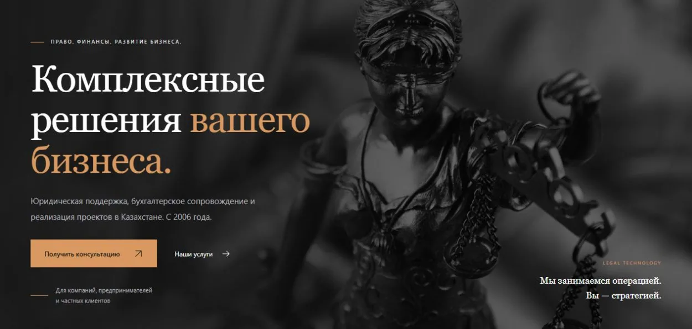
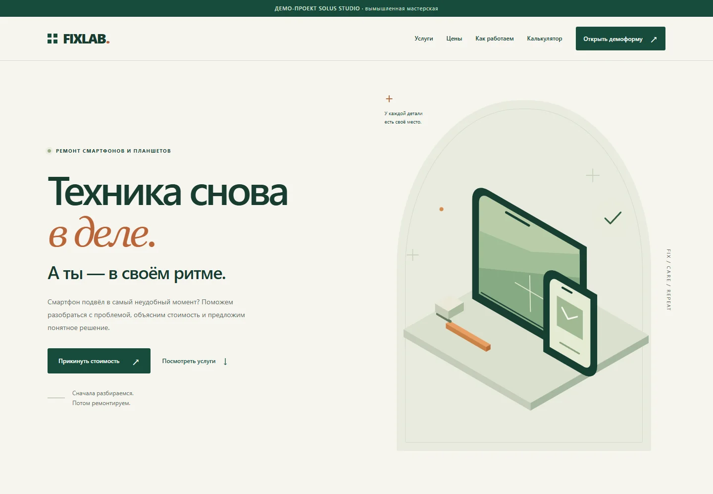

Client project · public demo
Legal Technology
A website demo for a legal and accounting firm with a service directory and a language switcher.
View the Legal Technology demoDigital engineering studio
We design interfaces and connect websites, Telegram bots, and internal tools into workflows.
Simulation
request.created
A visitor chooses a service. The example website creates an event with a test ID.
{ id: "demo-01", service: "website" }
request.validated
Required fields are checked and the data is formatted for the next step.
{ id: "demo-01", valid: true }
crm.record.preview
The validated data is used to preview a record with a service type and status.
{ id: "demo-01", stage: "new" }
telegram.message.preview
The record becomes a draft message for the team: “New website inquiry.”
{ id: "demo-01", delivery: "simulated" }
Sample workflow with simulated events.
Services
One team for the website, the bot, and the systems that need to work together.
Landing pages and company websites with clear navigation and responsive layouts.
Booking flows, notifications, and internal tools for your team.
Connect CRM, spreadsheets, and other services to your workflows.
{ "status": "ready" }Remove manual steps between receiving an inquiry, assigning an owner, and sending a reminder.
Projects
Explore how interfaces and automation work across different projects.

Client project · public demo
A website demo for a legal and accounting firm with a service directory and a language switcher.
View the Legal Technology demo
Concept · demo project
A phone and tablet repair website. The demo calculates a sample price and carries your selection into a test form.
View the FIXLAB demo
Interactive simulator
Run a test inquiry to see a sample CRM record and a draft Telegram notification.
View the FLOWPILOT demoProcess
From the first question to testing the finished workflow.
We clarify who will use the solution, which systems are already in place, and what needs to become easier.
Goal · audience · constraints
We map the steps from the first screen to the outcome and identify where data, integrations, and error handling are needed.
Workflow · interface · data
We run the main flow on phones and desktops, checking focus, navigation, and error states.
Devices · errors · acceptance
Contact
A website, a bot, or a process that takes too much time.